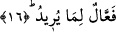

tek tane alacak olsa yine taneler biter fakat âhiretin süresi bitmezdi. Buna rağmen
âdemoğlu bunca sürenin azabından korkmuyor ve ömrünü değersiz, hızla sona erecek
bir nesne için tüketip duruyor.
Yukarıdaki ifâdede Rahman’ın istivâ ettiği ârifin kalbine işâret etmektedir. Nitekim
bir hadiste şöyle geçer: “Ârif ’in kalbi Allah’ın arşıdır.” [65] Bu arşın şerefi ise şuradan
kaynaklanıyor. O vâsi ve şerefli olan şey ârifin kalbinden başka bir yere sığmaz. Bu
ismin özelliği ise şudur: Bu isim celal, mecd ve taharet isimlerini zâhiren ve bâtınen
içerisinde toplar. Hatta beden ve suver âlemlerini bile içerisinde toplar. Bundan dolayı
derler ki: Baras hastalığına yakalanmış bir kimse birkaç gün oruç tutsa ve her gece iftar
esnasında bol bol bu âyeti okusa Allah’ın izniyle bu hastalığından şifa bulur. Ya hiçbir
sebeb olmadan şifa bulur ya da Allah kendisine bunun kapısını açtığı için o şifayı bulur.
16. Dilediği şeyleri mutlaka yapandır.
O kendi fiillerinden ve başkalarının fiillerinden dilediği şeyi ve muradı kendi
iradesinin dışında olmamak kaydıyla yapandır. İşte bu âyet hak ehlinin “hiçbir şey
Allah’ın iradesinin dışında olamaz” görüşlerine bir delil teşkil etmektedir. Allah
Teâlâ’nın bu âyette “fa’âl” kalıbını kullanması dilediğini yapma anlamına mübalağa
katmak içindir. Çünkü onun dilediği ve yaptığı hayat verme, öldürme, aziz etme, zelil
kılma, zengin etme, fakir kılma, şifa verme, hasta etme, yaklaştırma, uzak kılma, mâmur
kılma, tahrib etme, vasl, fark, keşif, hicab... ve bunun dışında yaptığı fiiller o kadar
çoktur ki!...
et-Te’vilat en-Necmiyye’de âyet şöyle açıklanıyor: O mü’min ve kâfir için dilediğini
yapandır. O ervah, esrar sâhiplerine, kalp ve nefis sâhiplerine, heva sâhiplerine
dilediğini yapandır. Ervah sâhiplerini nüfus sâhiplerinden kılmak isterse buna kadirdir
ve o bu konuda âdildir. Eğer bunun aksini yapmak isterse yine buna da kadirdir. O,
inkârcılar gibi dilediği kimseleri celali ile mahrum bırakır. Mukarrabîn’de olduğu üzere
dilediği kimseye cemâli ile tecelli eder. Ariflerde olduğu üzere dilediği kimselere tam
ihsanı ile muamelede bulunur.
Kaffal der ki: O dostlarını Cennete koyar. Buna hiç kimse mânî olamaz. Düşmanlarını
Cehenneme koyar. Bu konuda onlara hiç kimse yardım edemez. Bazı âsîlere dilediği
kadar mühlet verir. Bu mühlet onları dilediği vakitte cezâlandırıncaya kadar sürer.
Bazılarına ise dilerse hemen cezâsını verir. O dilediğini mutlaka yapandır.
Rivâyet edilir ki bir grup insan hasta yatağında iken Hz. Ebûbekir’i ziyarete varırlar.
Ona; “sana bir doktor getirelim mi?” diye sorarlar. Hz. Ebûbekir: “Doktor beni gördü”
deyince, kendisine: “Peki ne dedi” diye sorarlar. Ebûbekir: “Ben istediğimi yaparım”
dedi diye cevap verir.